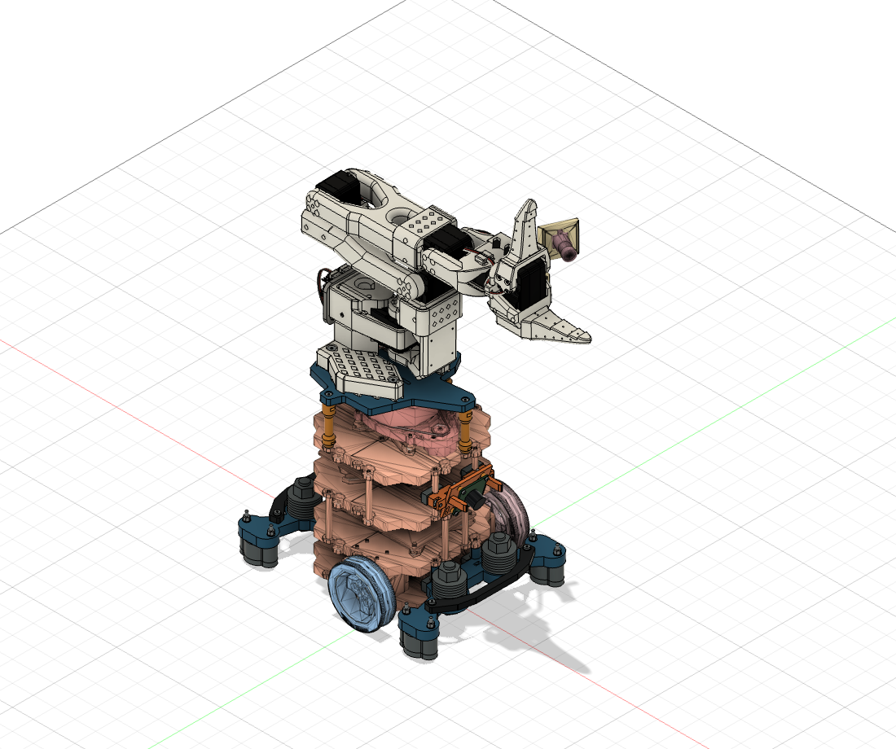

TurtleBot3 Burger × SO‑ARM101
R4 최종 출력·구매·조립표
R4의 기둥은 위쪽 M3, 차체 쪽 M2를 쓴다. 팔에는 머리 지름 8mm의 M4 접시머리 볼트가 들어간다. R3 출력물·구매표와 섞지 않도록 포장 안의 파일을 한 세트로 사용한다.

손목카메라는 집게 옆, belly캠은 차체 앞 두 기둥 사이에 고정한다. 두 카메라의 CAD 외형은 참조 형상이다.
조립과 로봇 동작 재생
회전·확대하는 3D 재생기 열기 · 27초 MP4 · 스토리보드가 담긴 Fusion 파일
0초부터 장착 구조, 7.5초부터 팔을 접은 120mm 주행, 12.5초부터 차체를 멈춘 뒤 작업점 접근, 19.2초부터 빈 집게 동작과 복귀가 나온다. 영상 속 두 작은 화면은 CAD 카메라로 계산한 예상 시야다. 관절 경로는 최대 1° 간격의 자세에서 간섭을 검사했다. 이 파일은 실물 로봇에 명령을 보내지 않는다.
Fusion에서 보기. F3D를 열고 애니메이션 → R4 · 조립과 카메라 위치 → ▶를 누르면 13.5초 동안 실제 조립 모델의 시점이 바뀐다. 카메라 모양의 뷰 기록 버튼을 켜 두면 저장한 시점을 따라간다. 바퀴와 팔 관절이 움직이는 27초 장면은 유틸리티 → 스크립트 및 애드인 → R4Playback → 실행으로 열 수 있다. 재생기에서 장면을 멈추고 드래그로 회전하거나 애니메이션 GLB를 저장할 수 있다.
다른 컴퓨터에서 보기. ZIP을 모두 풀고 3D 재생기 HTML을 Safari 또는 Chrome에서 연다. Fusion에도 추가하려면 스크립트 및 애드인에서 로컬 스크립트 추가를 눌러 키트의 Fusion/R4Playback 폴더를 선택한다. 폴더와 HTML·MP4의 상대 위치를 유지한다.
출력 파일과 수량
모든 STL은 mm, 배율 100%다. 상판은 약 142×142×7mm, 가장 긴 레일은 175mm다. 200×200mm 베드, 0.4mm 노즐, 0.2mm 층, 외벽 5줄, 상하 6층, 55% 자이로이드 인필과 베드에서만 시작하는 서포트로 PrusaSlicer 2.9.7에서 12종을 슬라이싱했다. 표의 무게는 해당 설정의 부품당 추정값이다. 실제 출력 조건은 프린터와 필라멘트 프로필에 맞춘다.
기본 수량의 순수 출력물은 약 268g이다. 서포트·브림·실패분은 추가로 잡는다. B05는 TPU 95A, 나머지는 PETG 기준이다. 먼저 A02 기둥 하나, B01·B02 클램프 한 조, D01·D02 소켓 한 조로 너트 삽입과 실물 고정·회전을 확인한다.
네이버 구매표
수량은 조립 한 대 기준이다. 링크는 국내 판매점 또는 규격을 넣은 네이버쇼핑 검색이다. 결제 전 옵션의 머리 지름·와셔 두께·너트 높이와 재고를 확인한다. 볼트모아 · 20mm 강구 판매자 규격 · M10 대형 와셔 규격
공구가 들어가는 순서로 조립하기
- 팔과 새 상판은 작업대에서 조립한다. A02의 옆 슬롯에 위쪽 M3, 아래쪽 M2 일반 너트를 넣는다. A01 위에서 M3×16 접시머리 네 개로 기둥 네 개를 먼저 고정한다. 팔을 먼저 올리면 뒤쪽 상판 나사 위 29mm 부근에서 팔이 긴 공구를 가린다.
- 팔 베이스 구멍의 90° 자리를 A01의 네 구멍과 맞춘다. M4×30 접시머리를 위에서 넣고 상판 밑 원형 홈에 평와셔와 풀림방지 너트를 조립한다. 모델에서 볼트 끝은 잠금너트 밖으로 약 1.7mm 나온다. 낮은 쪽 잠금너트를 조일 때는 작업대에서 스패너로 받친다.
- 전원을 분리한다. 터틀봇 원래 상판 밑면에 공구가 들어가게 접근한 뒤, 원래 네 구멍에 M2×12와 OD6 와셔를 아래에서 넣어 기둥 밑 너트와 결합한다. 공식 차체 메시의 네 구멍에서 Ø2mm 통과를 검사했다. 실제 구멍·기둥 수직 정렬과 라이다 간격을 확인한다. CAD상 라이다 꼭대기와 새 상판 밑면 간격은 7.5mm다.
- B01을 원래 앞·뒤 하단 육각기둥에 물린다. 대변 5mm, 좌우 축 간격 48mm 기준이다. M3 너트를 와셔 무게추를 올리기 전에 위에서 슬롯에 넣고, B02/B03을 M3×20으로 체결한다. 긴 턱·짧은 턱을 짝지어 원래 선반 바로 밑에서 레일이 위로 밀리는 것을 받치게 한다. 선반에 걸리지 않거나 조인 뒤 레일이 미끄러지면 재측정한다.
- 하단 네 곳에 M10 볼트를 아래에서 넣고 레일 위에 와셔 7장씩과 너트를 올린다. B05 범퍼를 체결한다. D02 링 위에 강구를 놓고 D01로 덮은 뒤 레일 밑에 고정한다. 바닥에서 링의 접시머리가 튀어나오지 않아야 한다. 링 개구는 Ø17.32mm, 강구는 Ø20mm다. CAD에서 수직 유격은 약 0.30mm, 매달린 상태의 바닥 간격은 약 0.5mm다. 수평면에서 원래 바퀴가 하중을 받고 강구가 손으로 회전하는지 확인한다. 높게 뜨는 곳은 선택 심 D03으로 조정한다.
- 손목캠은 구매한 로보시지 홀더에 둔다. 기준 모델의 렌즈와 집게 끝 거리는 약 103mm다. 선을 전완에 먼저 고정하고 손목 회전 여유를 둔다. belly캠은 C01/C02로 차체 앞 중앙에 고정한다. 렌즈 높이 약 117mm, 아래쪽 18°로 설정해 중심선이 약 361mm 앞 바닥을 본다. C03 네 개와 M2×12로 기판을 체결한다. 32mm 기판·M2 사각 홀 피치 약 20.4~29.6mm 기준이다. 실제 로보시지 옵션의 홀 피치·렌즈 돌출·커넥터 방향은 장착 전에 대조한다. 스트랩은 브래킷 아래쪽 긴 구멍을 사용한다.
검증 범위와 주행 조건
빈 집게로 팔을 접은 뒤 이동하며, 물건을 집을 때 차체를 멈춘다. 실제 링크 질량을 사용한 관절 모델에서 65,536개 자세를 표본 계산했다. 표의 숫자는 경사와 차체 가속을 반영한 하중 작용선이 지지 경계까지 남긴 거리다. 음수는 경계 밖을 뜻한다.
¹ 보조 강구와 구동 바퀴가 형성하는 이상적인 지지 경계다. 실제로는 네 강구가 기울기에 따라 차례로 닿는다. 평탄한 정지 자세를 가정한 계산이라 턱 충돌, 팔의 빠른 가감속, 프린트 부품의 처짐·강도는 실물 시험이 필요하다.
차체 1.0kg과 무게중심 (−32, 0, 90)mm를 가정했다. 차체 좌우·앞뒤 ±15mm, 높이 ±20mm, 출력 질량 ±30%, 고정 배선 등 0~80g, 손목 부착물 추가 0~20g을 반영했다. 팔·손목 카메라 참조 질량 약 0.667kg, 차체 부착물·체결재 추정 약 1.04kg이다. 각도·가속 조건은 실물 제어기에 적용하지 않았다.
수정한 CAD로 접힌 자세와 지면에 가까운 작업 자세를 따로 검사했다. 구동 바퀴축에서 앞으로 151mm, 바닥 위 20mm에 집게 끝이 놓이는 자세가 한 예다. 서로 다른 자세 사이의 전체 이동 경로, 실물 배선·카메라 케이스와 작업물까지 포함한 충돌 여부는 직접 확인해야 한다.
첫 시험은 평탄한 곳에서 한다. 차체를 손으로 받친 상태에서 무부하 정지·저속 출발·정지·회전 순서로 확인한다. 구동 바퀴 들림, 기둥 미끄러짐, 강구 걸림이나 층 갈라짐이 있으면 동작을 멈추고 해당 부품을 점검한다. 팔·배선을 제외한 장착 차체 외곽은 약 232×178mm다.
설계 원본과 규격 ROBOTIS Burger · SO101 관절·관성 모델 · 로보시지 조립 안내 · DIN 7991 볼트 치수